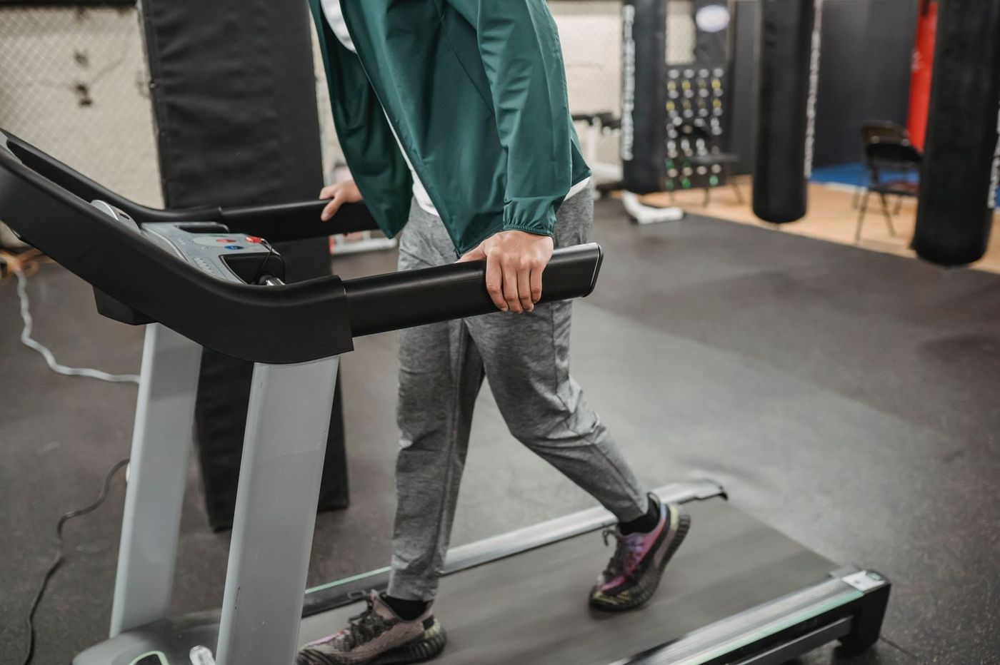
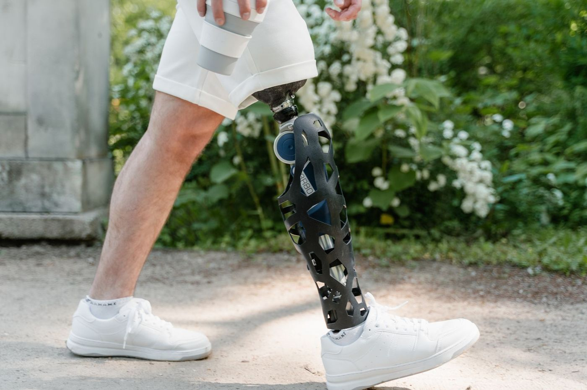
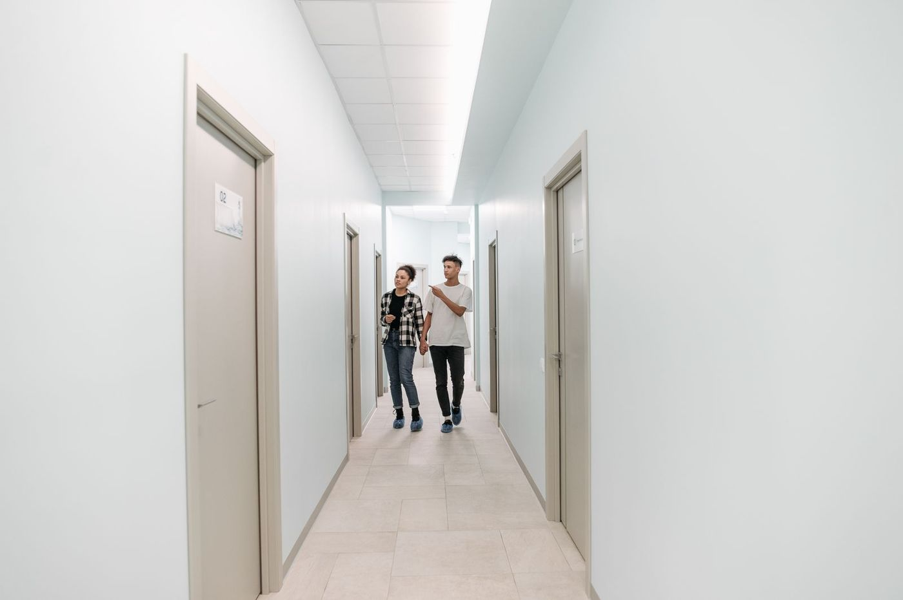
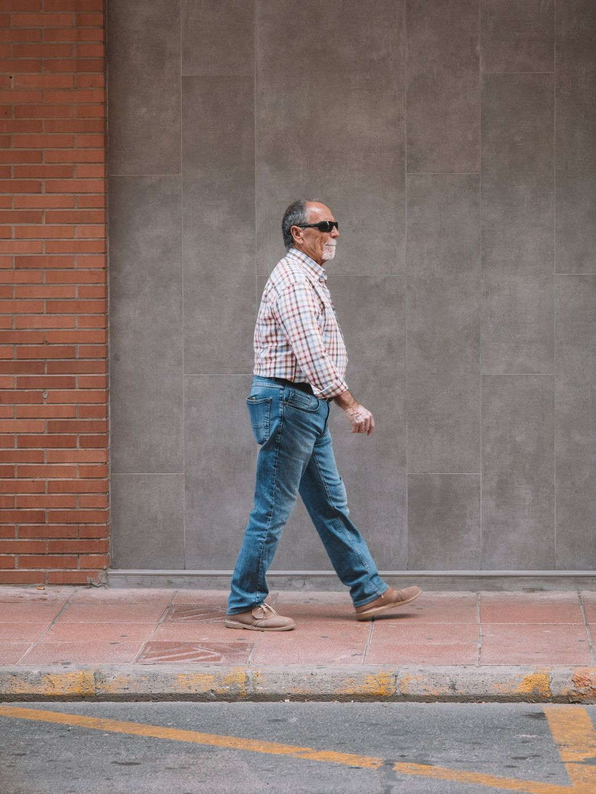

90% relative humidity
72°F dew point
Why this essay: I train in South Florida humidity, and the thermometer kept lying to me.
A humid 75°F morning can feel worse than a dry 90°F afternoon. The dew point, not the temperature or the humidity percentage, decides how well your sweat can cool you.
SCROLL INTO THE MUGGY AIR ↓Drag the sliders to build any morning, then type in your easy pace. Two verdicts update as you do: the dew point grades how hard your sweat has to work, and the heat index grades the heat load itself.1
Expect sweat to linger and effort to rise. Use effort, not a rigid pace, as your primary guide.
The heat index folds air temperature and humidity into the load the body has to shed. It is defined from 80°F up.
The pace-adjustment percentage comes from a coach's rule of thumb: Mark Hadley8's 2013 temperature-plus-dew-point bands, not a peer-reviewed lab study. Treat it as a cue to back off effort, not a prescription.8
90% relative humidity
40% relative humidity · heat index ≈99°F
The hotter day is obviously brutal. But the dew point catches something the thermometer and the heat index miss. The cooler morning leaves less room for your sweat to evaporate.
Relative humidity is actual vapor pressure divided by the saturation vapor pressure at the current temperature.2 Warm air holds far more water vapor, so the percentage shifts as the temperature shifts, even when the air gains no moisture. Dew point is the temperature at which that air would hit saturation: when the dew point climbs, the moisture content climbed with it. One humidity number cannot tell you how a run will feel: the same 70% relative humidity can describe a pleasant 55°F morning or a punishing 85°F one.
Dew points computed with Magnus-Tetens.1 This comparison does not claim Day A is more dangerous overall.10At 55°F, dew point is ≈45°F: cool air holding relatively little moisture.
At 85°F, dew point is ≈74°F: warm air loaded with water vapor.

Evaporation runs on the vapor-pressure gap between wet skin and the air around you. The 95°F anchor sits within the textbook 34 to 36°C exercising mean3-skin-temperature range.3 The gradient is a pressure difference, in hectopascals: saturated skin at 95°F (35°C) holds vapor at about 56 hPa, while air at a 72°F dew point already holds about 27 hPa and air at a 67°F dew point about 23 hPa, leaving gradients of about 29 hPa on Day A and about 34 hPa on Day B. Sweat stays on the skin while heart rate and thermal strain climb. Day A's air sits closer to saturation than Day B's, so its gap is narrower even though the day is cooler.
56 − 27 = 29 hPa GRADIENT
Narrower gradient. Same sweat, less cooling.
56 − 23 = 34 hPa GRADIENT
Wider gradient. More room for vapor to escape.
NOAA's 1991 to 20206 normals for Miami International Airport put the average dew point at 72.0°F in June, 73.0°F in July, 73.8°F in August, and 73.2°F in September.6 That is four straight months parked in the runner's "very humid" band.
Only the four verified summer-month normals are filled; other months are intentionally left unquantified. NOAA 1991 to 2020 normals, Miami International Airport.
Miami’s average dew point from June through September. NWS Miami calls dew point “the best measure of moisture levels in Florida.”
NWS Miami summer-season climatology.A typical August morning at 88°F with a 74°F dew point sums to 162, Hadley’s 161 to 170 pace-adjustment band. Treat the 8% as a cue to back off effort, not a physiological law.8
NWS Miami calls dew point "the best measure of moisture levels in Florida."2 NWS Miami summer-season climatology.
Che Muhamed4 and colleagues randomized 11 trained male distance runners across five treadmill sessions at 31°C (87.8°F): 60 minutes at 70% VO₂max, then an incremental test to volitional exhaustion.4
Time to exhaustion dropped significantly at 61% and 71% relative humidity versus 23% (P=0.045 and P=0.005). Mean body temperature ran higher, and heart rate and stroke volume shifted. But whole-body sweat loss did not differ (P=0.183).
Flip the toggle to relabel the same five conditions by dew point instead of relative humidity. The story does not change: at the same 88°F air temperature, the endpoints span ≈45°F to ≈77°F dew point.
The driest run, and the yardstick for every comparison below. Mean body temperature at exhaustion: 37.7 ± 0.3°C.
Time to exhaustion: not significantly different from the reference run.
Time to exhaustion: not significantly different from the reference run. Skin temperature at exhaustion was already significantly higher: 32.5 ± 0.8°C against 31.7 ± 0.9°C.
Time to exhaustion: significantly shorter than the reference run. Mean body temperature at exhaustion: 38.1 ± 0.4°C.
Time to exhaustion: significantly shorter than the reference run. Mean body temperature at exhaustion: 38.3 ± 0.4°C; core temperature 39.7 ± 0.3°C.

Ely and colleagues pulled together decades of results from seven marathons and sorted race weather into four WBGT quartiles, from 5.1 to 10°C up to 20.1 to 25°C.5 Top men slowed 1.7%, 2.5%, 3.3%, and 4.5% versus course-record pace across those quartiles. The slower finishing groups were hit harder.

The classic ACSM9 Event Alert System runs on WBGT, not relative humidity.9 Below 50°F is white for hypothermia risk. 50 to 64°F is green. At 65 to 72°F, at-risk runners should slow. At 73 to 82°F, at-risk runners should withdraw and others should slow. Above 82°F WBGT is black: cancel or recommend voluntary withdrawal.
Those are 2007 race-day thresholds. ACSM's 2023 exertional-heat-illness consensus is the current clinical reference. It covers environmental heat stress, activity modification, recognition, rapid cooling, and individualized return.
Air temperature plus dew point alone cannot validly assign an ACSM flag. Use an on-site or race-reported WBGT.
Hypothermia risk
Decreased risk
At-risk runners slow down
At-risk withdraw; others slow
Cancel or voluntary withdrawal
The familiar runner's dew-point chart traces to a letsrun.com7 forum thread, not a laboratory validation study.7 Its breakpoints line up broadly with meteorological guidance. Around 55°F feels comfortable, above 65°F feels humid, and above 75°F feels oppressive. The agreement makes the chart plausible; its origin is still a forum thread, not a lab study.
Coach Mark Hadley's 2013 rule adds air temperature and dew point, then assigns adjustments from 0.5% at 101 to 110 to 10% at 171 to 180.8 A 2026 preprint describes the bands explicitly as "not peer-reviewed physiology." An effort-based decision beats treating 8% like a biological constant.
The calculator at the top of this essay applies Hadley's bands to whatever weather you build. Same arithmetic, same caveat.
Check the dew point. Run the effort the air will allow.
Superscript numbers in the essay point here. Each note names the source and says plainly where the figure comes from.
How this was built. Every dew point on this page is computed from air temperature and relative humidity with the Magnus-Tetens approximation; the heat index uses the NWS Rothfusz regression and appears only at 80°F or above. The two peer-reviewed studies are Che Muhamed and colleagues (Temperature, 2016): 11 trained men on treadmills at 31°C, 60 minutes at 70% VO2max then an incremental test to exhaustion, and Ely and colleagues (Medicine & Science in Sports & Exercise, 2008), decades of results from seven marathons grouped by WBGT quartile, which captures moisture through its 70% wet-bulb weighting rather than isolating dew point. Miami's June to September averages are NOAA 1991 to 2020 climate normals for Miami International Airport; the other eight months were left blank because only those four were verified. The runner comfort bands and the temperature-plus-dew-point pace rule are coaching heuristics, not peer-reviewed physiology. The flag thresholds are the classic 2007 ACSM Event Alert System; the 2023 ACSM exertional-heat-illness consensus is the current clinical reference. Day A versus Day B shows that dew point detects evaporative constraint the thermometer misses; it does not claim the cooler morning is more dangerous overall. Educational, not medical advice.
Chart data for this essay: data/dew-point-killer/.
Why this essay: Gait is physiatry’s home turf: one second of walking contains the whole exam.
Scroll to walk it, or scrub the stride yourself in the lab: the figure, clock, phase name, joint readouts, and traces all run from the same normative teaching values.2
Heel hits ground. The limb gets set to accept your weight: ankle neutral, knee nearly straight.
Accept your weight and absorb the shock. The knee yields toward 15 to 20° while the tibialis anterior (the shin muscle) lowers the foot slowly, braking as it lengthens, over the heel rocker: the heel rolls like the bottom of a rocking chair.
You are on one leg. Your body passes over the planted foot as hip and knee move toward extension and the tibia rolls forward at the ankle.
Heel rises. Your body moves past the foot, hip extension nears its peak, and the forefoot rocker (your weight rolling over the ball of the foot) carries you forward.
Unload and get ready to swing. The knee flexes rapidly toward 40° and the ankle plantarflexes (points the toes down) for push-off as the opposite foot takes over.
The foot lifts. Hip flexion begins, the ankle returns toward neutral, and knee flexion hits its biggest excursion of the cycle near 70 to 73%.
The limb swings through until the tibia is vertical. Knee flexion unwinds toward 25° while tibialis anterior holds the foot near neutral so you clear the ground.
The limb extends and gets ready to land. Hamstrings slow the leg while your hip extensors pre-activate for the next loading response.
In the Rancho Los Amigos / Perry convention, stance takes about 60% and swing about 40%.1 The part that keeps you upright is the overlap: two double-support windows of roughly 10% each, bookending single-limb support.

The same stride, drawn out in full. The cursor follows the lab above, whichever control is driving it. Watch the knee’s double bump: a small loading-response flexion, then a much larger swing peak of roughly 60°. The readout gives the plain version as you move. Two words the curves use: dorsiflexion is pulling the toes up toward the shin; plantarflexion is pointing them down, away from it.
0% · knee 3° flexed, the limb is set to accept your weight with the knee nearly straight
Curves interpolated between normative key values. The shape is representative, not one person’s recording.


Gus is made up: a teaching dummy, not a patient. Walk him through the cycle and each phase breaks in exactly one place.
Loading response: when the tibialis anterior is too weak to lower the foot slowly after contact, the foot can slap the ground. Swing: the same weakness can let the toe drag, so Gus hikes his knee and hip to make clearance: the steppage pattern. Not every weak ankle does both; which pattern shows up depends on what else still works.
Midstance: Gus’s opposite hip drops because his hip abductors, gluteus medius chief among them, cannot hold the pelvis level over the stance leg. Weakness is the classic cause; pain or a stiff hip joint can produce the same drop. He leans his trunk over the stance leg to cut the abductor demand.
These are illustrative teaching patterns, not diagnoses or a symptom checker. Similar observations can have many causes and need a complete examination.
Know the phases, and every PM&R clinic hallway is a gait lab.
You’ve been doing all of that on autopilot, every day, without once thinking about a single phase.
In 1953, Saunders, Inman, and Eberhart proposed six mechanisms: pelvic rotation, pelvic tilt, knee flexion in stance, foot and ankle mechanisms, knee-ankle-foot interactions, and lateral pelvic displacement. Together they supposedly flatten the center-of-gravity path (~5 cm vertical and ~6 cm lateral) and make walking efficient.35 Later, Kirtley (1999) and Kerrigan and colleagues (2001) asked whether those mechanisms really minimize vertical displacement or explain efficiency.4 Charming idea; treat it as a historical lens, not current doctrine.
![Motion-analysis participant wearing reflective markers and surface EMG electrodes]()
Superscript numbers in the essay point here. Each note gives the source and says plainly where the figure comes from.
Methods in one paragraph, with the data.
The figure and curves run on normative teaching values in the Perry / Rancho Los Amigos tradition, with the eight phases and their boundaries from that convention. Joint angles are teaching approximations, and the curves interpolate linearly between key values: the shape is representative, not one person’s recording. Broad teaching averages put cadence at about 101 to 122 steps/min and step length at about 2.5 ft; they are intentionally not used to score this figure. The clinical patterns are illustrative teaching examples, not diagnoses: similar observations can have many causes and need a complete examination. This essay is about cycle mechanics, not gait speed, mortality, or risk prediction. Chart data and key values: data/gait-cycle/ (CSV plus a README with sources and transformations). Checks flagged in expert review: phase-boundary convention, kinematic values, and the drop-foot/Trendelenburg pairing. Educational content only, not medical advice.
Why this essay: I’m a maker with a 3D printer, and the cost curve of printed prosthetics stopped me cold.
A carpenter's table-saw accident, a YouTube comment, and seventy pins on a map became a volunteer movement printing prosthetic hands for $50 in plastic, materials only, against devices with a $40,000 total price. The cost-collapse story of 3D-printed prosthetics: what fifty dollars of filament can do, and where it falls short.
FIG. 02 · THE HAND, PART BY PART · STEP THROUGH THE PARTS
A Cyborg Beast-style printed hand, all on one figure: a PLA shell, nylon cords where tendons would sit, screws for knuckles, padding against the skin. No motors, no batteries: the wearer’s own wrist is the engine. Step through the parts; each stop carries its piece of the cost and function story.
The whole bill of materials: $50, materials only.
One printed hand, taken apart in place: the parts the old exploded diagram laid out in a row, now on the hand itself, each with its piece of the cost and function story. Diagram only, not an assembly manual.
No company planned this, and no grant funded it. A carpenter who lost fingers, a puppeteer who knew how joints move, and a researcher who left a comment on a video built a volunteer manufacturing network by accident.
In 2011, South African carpenter Richard Van As teamed up with Bellingham special-effects artist and puppeteer Ivan Owen. They built a mechanical finger, then a hand.2
In February 2013, MakerBot donated two 3D printers; Owen and Van As released the first printable hand's design files open-source, public domain. Anyone with a printer could build one.3
That spring, RIT researcher Jon Schull saw the YouTube video and dropped a Google map mashup into the comments, inviting makers and recipients to pin themselves: 70 pins in 6 weeks. The Google+ community became e-NABLE.4
From 2014, a design boom: myoelectric versions, plus task-specific hands for bike-riding and trumpet-playing. One father built his son a hand with two thumbs ("Cool Hand Luke"). The map kept blooming because the files were free.
Older e-NABLE materials cite ~20,000 volunteers and 8,000 recipients; a recent partner page lists 197 chapters across 53 countries and ~33,000 volunteers. No audited count exists. Treat each figure as a dated organizational claim.5
Jose Delgado Jr. was born missing much of his left hand. His myoelectric prosthesis cost thousands of dollars and gripped weakly; his 3D-printed Cyborg Beast cost $50 in materials (printer sold separately) and worked better. He drives with it.1
Scroll through the three beats below and watch what happens to the $50 bar when it is drawn on the same scale as $40,000.
FIG. 05 · PRICE TAGS · FIELD SKETCH
Thousands for weak grip; $50 in filament for the hand that worked better for him. One man’s result, not a general rule: price and performance don’t have to move together.
That's 800× the materials cost of the printed hand. The orange $50 bar is there, thinner than your screen can draw. Top-end myoelectric/bionic devices exceed $30,000 to $40,000+ (Bebionic >$30k; private bionic arms up to £60k).
"$50" is materials only: filament, screws, cord. Printer sold separately. A printed hand competes on different terms entirely. Keep scrolling.
The printed hand is weaker by every laboratory measure. Its hoped-for advantage is that a child might choose a superhero hand over a beige hook and keep it on. Might: no study has measured whether printed hands get worn more. This essay is about what fifty dollars of filament can do, and where it falls short.
Children outgrow a fitted prosthesis every 6 to 12 months (UNM / Carrie Tingley Hospital), and a basic claw-type pediatric hand costs $700 to $10,000 to make, re-fitted on that cycle until age 18. A printed hand costs $30 to $50 in filament and gets reprinted at the next size.6

Pick a device price below and watch the lifetime bill from age 5 to 18 change.
Prosthesis rejection is one of rehab's quietest epidemics. Biddiss & Chau (2007) screened ~200 articles and found rejection rates in 40: 45% for body-powered and 35% for electric devices in children (26% / 23% in adults). Some body-powered hook studies reach 80 to 87%.7
Whether kids ask for superhero-printed ones instead is unproven: a 2026 systematic review found customization increases acceptance and comfort, which is a reason for hope, not a measured wear rate.8 No published rejection rate exists yet for printed devices specifically; the pattern is inferred across two separate literatures, not measured directly.9
The movement’s bet is that rejection is about identity as much as price. A beige hook that costs $10,000 can signal disability. A blue Iron Man hand that costs $50 can signal superhero. If the bet is right, one gets left in a drawer and the other gets worn to school. But a bet is not a result: hours worn per day is the metric that would settle it, and nobody has published it for printed devices.
The classic e-NABLE designs are wrist-driven: non-elastic cords run along the palmar fingers like tendons. 20 to 30° of wrist flexion closes the fingers into a composite fist; dorsal elastic cords re-extend them. Without a palm and ≥30° of wrist motion, the mechanism has nothing to pull with.10
Drag the wrist slider from 0° to 30° and watch the fingers close; the readout tells you the hand's state at each angle.
Materials, printer time, assembly: "like a big Lego kit." Other builds run ~20 h per hand (Tampa Bay); a palm alone can take 16 h.
11PLA or ABS plastic, Chicago screws, 1 mm nylon cord, 1.5 mm elastic cord, Velcro, foam padding, dial tensioner. A hardware-store bill of materials.
Without wrist motion there’s no mechanism. These wrist-driven designs cannot serve wrist-disarticulation or higher amputations; those levels use elbow-powered body-powered arms, or myoelectric designs.
The supply chain for a $50 hand is a garage, a campus makerspace, and a father who refused the catalog. Four sketches:

Built the Cyborg Beast after his young son saw a conventional prosthesis and said: "Daddy, that hand is too real." So he designed one that looked like a toy.
UCF students who built their first arm on a kitchen table for under $350 for Alex Pring, born missing most of his right arm. The delivery, styled like Iron Man by Robert Downey Jr., went viral.
Fitted with a Deus Ex-themed bionic arm as a teenager, and wears it openly. One teenager’s choice is an anecdote, not a wear rate.
A father who built his son a hand with two thumbs, because when the design files are free, the prescription pad is optional.
Every claim below comes with its sample size, because here the sample size is the story.
X-Limb is the best-documented printed hand: 253 g, 21.5 N power grip; 45,000 grasp cycles without failure; $200 bill of materials. Its makers benchmarked it against the AM-ULA, the standard 18-task test of everyday prosthesis use: the hand demonstrated the pinch, tripod, and power grasps those tasks require. That is a bench demonstration of grasp types, not a clinical score from amputee users.12 An adult man's peak grip is about 52 kg (~510 N); a woman's about 34 kg (Portuguese workers).13 X-Limb's 21.5 N is about 4% of the man's figure. Touch Hand 4 managed 30.4 N but only 50% grasp success across test objects, with a 4.5-second response time; in one transradial amputee, a printed pressure-sensored hand showed lower grip strength and dexterity than the conventional myoelectric.14 Zuniga and colleagues fitted the Cyborg Beast to 5 children (ages 3 to 10) for 6 months, with significant gains in active range of motion and forearm circumference, small n and no control group.15 A 2026 systematic review of 20 articles (2020 to 2025) found a trend toward myoelectric/sensorized printed designs, pinch grip most effective, customization increasing acceptance and comfort.8 No randomized trials of printed prostheses exist.16 A printed hand is a gross-grasp assistive tool.

PLA creeps: it deforms under sustained load and degrades with heat and UV. A printed hand is a consumable: it will not last a decade, which is why the price matters. Classic wrist-driven designs require a palm and ≥30° of wrist flexion. Higher amputations need a different drive entirely: elbow-powered body-powered arms exist, as do myoelectric designs. The $50 wrist mechanism has nothing to pull with at that level.
The sentence the movement survives on is the regulatory story: e-NABLE chapters position their hands as "experimental assistive devices, not medical devices." External limb components sit in FDA Class I (21 CFR 890.3420); the custom-device exemption skips premarket approval but not quality-system, reporting, or labeling rules. The movement is meanwhile walking toward the clinic it once routed around: Hero Arm (Open Bionics) became an FDA-registered Class I device; NHS England funded multi-grip prostheses for children from 2018; Limbitless ran an OHSU clinical trial (2021) and is pursuing FDA clearance for prescription and insurance coverage. Whether the "not a medical device" framing would survive a serious adverse event is untested.
Every $50 figure in this essay is materials only. The printer, the volunteer's time, and the fitting expertise are real costs someone absorbs.
A $50 printed hand leaves the prosthetist in place and deletes the waiting: for authorization, for the next size, for a device that fits the child in front of you. The prescription of the future might be a file, a printer, and a follow-up appointment.
Superscript numbers in the essay point here. Each note gives the source and says plainly where the figure comes from.
Cost figures are materials-only unless a device is labeled conventional: the $50 Cyborg Beast figure and the Delgado story come from 3D Printing Industry; $40,000+ reflects top-end myoelectric devices. The pediatric recomputer multiplies one device's price by the refits needed from age 5 to 18 at a fixed 12-month interval (13 refits), assuming constant prices and no insurance; it is a projection, not a bill. Grip figures are peak power-grip values: 510 N for the adult-male reference, 21.5 N for X-Limb, 30.4 N for Touch Hand 4. e-NABLE scale figures are dated organizational claims with no audited count. The 2026 systematic review is conference-proceedings evidence. Chart values are published as CSVs in data/fifty-dollar-hand/, with a README describing sources and transformations. Full sources are in the collapsed list below. Educational content only; not medical advice. Data last checked October 10, 2026.
Why this essay: I’ve run marathons, and I wanted an hour-by-hour account of what the body actually goes through.
One marathon, told hour by hour: three runners, one race clock, and every physiological beat anchored to a published number.
Scroll, and the race clock runs. The dots move at their own paces: gold is Priya at 4:16/km, blue is Marcus at 6:24/km, red is Louise, who never reaches the finish. Watch where they separate.
A carbohydrate-loaded runner starts with muscle glycogen around 150 to 200 mmol per kg of wet muscle, roughly double the normal-diet store. Everyone on the line carries the same fuel. What differs is the burn rate.
5
After about 10 minutes of steady effort, heart rate climbs at a constant pace while stroke volume falls: cardiovascular drift. By 1:00, about 1 liter of sweat is gone (0.92 to 0.99 L/h in a warm marathon7), and the heart beats roughly 10 bpm faster than at the start; in lab heat, drift reached +15 bpm over 45 to 60 minutes. Runners replace only a fraction of their losses, and underestimate their own sweat loss by 42.5%. In hot, humid conditions the rate can hit 1.5 L/h; one elite winner in Dubai sweated 3.6 L/h and finished 9.8% lighter.
678910
Priya crosses halfway in 1:30. Carb-loaded runners burn about 5 mmol of glycogen per kg per km, so 21 km has cost roughly 105 mmol/kg, about half of loaded stores (~200). The math for the full distance: 5 × 42.2 ≈ 210 mmol/kg. On paper, the tank alone doesn't reach the finish. But runners also burn fat and take in fuel along the way, so where the low-fuel point lands, and whether it lands at all, varies from runner to runner.
1
At 4:16/km, kilometers 30 to 35 arrive between 2:08 and 2:29. Glycogen runs low here for many runners, and a metabolic model predicts a wall at mile 21 for runners at 80 to 95% of VO₂max. Priya's risk looks low, with a label attached. The measured rate, sub-3:00 men hitting the wall only 1.42% of the time, comes from men's records; no equivalent women's rate appears in this essay's sources. Priya is a woman, so her low risk is inferred from her even pacing (82% of sub-3:00 men even-pace), not measured in runners like her.
11124
Louise didn't dehydrate. Louise overdrank.
You might be thinking the fix is simple: just drink more. For Louise, that was the problem. In the best-known study of this, the 2002 Boston Marathon, weight gain during the race was the strongest predictor of hyponatremia, and 35% of the runners studied gained weight. 13% of the 488 finishers who gave a finish-line blood sample were hyponatremic (Na⁺ ≤135 mmol/L); 0.6% were critical (≤120). In that study's adjusted model, fluid type (water vs. sports drink), sex, and NSAID use showed no association. One race and one sample cannot settle those questions for every race; it is a finding about 2002 Boston, not a general all-clear.
Louise is the exception. By 2:00, most runners had sweated nearly 2 liters and dropped about 1.5% of their body mass; runners replace only a fraction of their losses. Louise went the other way.
And heat alone doesn't explain who collapses. In one hot half-marathon, 12 of 18 runners topped 40°C (max 41.7°C) with zero heat-illness symptoms. Temperature and collapse don't track together: the number alone doesn't predict who falls. Read that as a measurement puzzle, not reassurance: a high reading by itself neither diagnoses heat stroke nor clears a runner. The emergency sign is the brain. Confusion, staggering, slurred speech, or collapse during or after exertion in the heat is exertional heat stroke until proven otherwise, and the consensus response is immediate whole-body cooling, cold water immersion when available, then transport: cool first, transport second.20 In the lab, heart rate ran about 10 bpm higher at 0.9% dehydration and 18 bpm higher at 2.8% than when euhydrated.
271319
4:30. That lands Marcus in the 17.2% of Boston finishers over 4:30 (median 3:46). The wall, in the pacing sense, arrived around mile 20 and never left: his second half was 27 minutes slower than his first, the strong positive-split fate of 12.2% of the field. Across 4 million race records, 28% of men and 17% of women show the pacing-defined wall.
415Mean creatine kinase hits ~3,424 IU/L about 24 hours post-race (range 319 to 9,260). The early papers called that "considerable transient exertional rhabdomyolysis"; by modern usage, a big CK rise on its own, without kidney injury or symptoms, is enzyme leakage from muscle, not the clinical rhabdomyolysis syndrome. CK-MB reached 130 IU/L, 8.3% of total. In the CK-MB era that pattern suggested a massive heart attack; today a heart attack is diagnosed with troponin and the clinical picture, not CK-MB alone. In the best-known early check (Siegel and colleagues, JAMA 1981), heart scans in runners with high CK-MB showed no myocardial injury, pointing to skeletal muscle as the source, within the limits of 1981 scanning and a small group of runners.
316Priya, Marcus, and Louise are illustrative composites built from published data: made-up names and ages, real numbers. Every figure in their arcs is sourced; the people are not.
82% of sub-3:00 Boston runners even-pace their race. The men's wall rate at this level is 1.42%. 4
Illustrative composite · made-up nameMarcus sits in the strong positive-split cluster (12.2% of the field): second half 27 minutes slower than the first. 4
Illustrative composite · made-up nameA hyponatremia thread: in the 2002 Boston study, weight gain during the race was the strongest predictor. Fluid type showed no association in that sample. 2
Illustrative composite · made-up nameAsk runners and 43% say they've hit the wall. Measure pacing and the figure is 17 to 28%. The definition gap is the story: only 70% of self-reported wall-hitters showed a matching slowdown.
Drag the intake slider and watch the guideline band change, and notice what doesn't change: the mechanism. In-race carbohydrate (30 to 90 g/h) spared 25% of type-I fiber glycogen use and stretched time to exhaustion from 104 to 132 minutes.14
Verdict: covers 2 to 3 hours. The marathon band.
Ceilings, labeled. Glucose-only absorption maxes around 0.8 to 1.0 g/min (intestinal transport limit); glucose + fructose reaches ~1.7 g/min. So 90 g/h only works with multiple transportable carbs. 18
The wall is not a fixed place: it is where low fuel, pace, and the day meet, often around kilometers 30 to 35, where the glycogen math (5 mmol per kilogram per kilometer times 42.2 kilometers) can outrun the tank. Priya's even pacing kept her clear of it; Marcus faded there; and Louise's tent is the twist, because in the 2002 Boston study, 13% of sampled finishers were hyponatremic and the strongest predictor was weight gain, not dehydration. Three runners, one clock, and every beat of it published somewhere.
Superscript numbers in the essay point here. Each note gives the source and says plainly where the figure comes from.
Every number in this essay was read from a real published source in October 2026. Superscript numbers point to the notes above, which name each source and say plainly where each figure comes from; the math behind every derivation is shown in the text. The data behind the clock and the charts are published as CSV files in data/twentysix-two/, with a README listing sources, access dates, and transformations. Scope: no marathon-race-specific cardiac drift curve exists; all drift data are lab-based. GI distress, cumulative impact loading, and the post-marathon immune "open window" are outside this essay's scope; nearly all data are recreational/sub-elite.
Why this essay: Energy cost is the hidden tax on every patient I see who walks differently.
Below is a room of 1,000 walkers, and each figure glows brighter the more oxygen its owner pays per step. Click any figure to read its fare, or press the button to reveal the most expensive step in the room. As you read on, the fare meter above climbs from 1.0× to 7.7×.
Modeled mix, not a census14151617
Condition, fare per meter, walking speed, and daily steps. Every figure is sourced.
The same modeled mix as the figures, as a list. Counts are the model's, not a census.
There are two ways to bill a walk. O₂ rate (milliliters per kilo per minute) is how hard the engine works. O₂ cost (milliliters per kilo per meter) is the actual fare. People almost always slow down to protect the engine, so cost per meter is the comparison that counts1. Flip the switch and watch what happens to the same walkers when the accounting changes:
The full numbers behind the bars, priced per meter (the title counts steps; the fares count meters) against the intact-walker baseline of ~0.15 mL O₂/kg/m21:
Same walkers, two ledgers. Bars show ranges where studies disagree; transtibial spans four published answers.

Two receipts, with the arithmetic shown:
Translated into calories at about 5 kcal per liter of oxygen, for a 70 kg walker: about 560 calories for the first day, about 290 for the second.
Transfemoral walkers average 1,540 steps a day10. In these two modeled receipts, the walker paying the most per step takes the fewest steps, and still ends the day ahead on oxygen. That is a comparison of the two receipts above, not a ranking of every walker.
Pick a walker, enter your own step count, and watch the day's oxygen bill. The meter shows its work and stacks it against an intact walker's day. Default step counts are published averages101112, estimated where none exist; KAFO swing-through speed comes from an n=8 lab study18. Treat the result as an illustration, not a physiological budget: it multiplies steps by a fixed step length of 0.7 m and the walker's per-meter fare, and real days vary with speed, terrain, and fit.

Fifty years of prosthetic feet, from wood and rubber to carbon and microprocessors, tested in a handful of small studies of transtibial walkers. You'd expect the meter to fall. In those samples, it didn't, with one exception noted in this essay's own sources: one foot improved walking cost by 5% in the earliest study. No significant difference in small samples is not proof that no foot can help any walker.
Five active transtibial men walked and ran in three feet. The energy-storing Flex-Foot beat the SACH nowhere: no significant walking difference.7
Thirteen transtibial walkers, five feet of differing forefoot flexibility. No differences in oxygen cost. Subjects simply preferred the most ankle-like.8
Doubly-labeled water, the gold standard for total daily energy, found microprocessor knees changed no oxygen per unit distance. Users just walked more.9
So the foot you bolt on barely moves the lab number. It moves how far people choose to walk.
What arrived, what disappeared, what never left. Filter the two lists to see it. Prices are 2025 Medicare fee-schedule figures, not retail; the 1970 SACH price was never published13, so the list says so instead of inventing one. The priciest foot runs $17,534.17 against $223.97 for a SACH.
SACH: Staros (VA), 1957: wood keel, rubber shell, compressible foam heel; "standard due to its availability, inexpensiveness, and durability." Jaipur foot: Sethi, 1970s India, the second most used foot after SACH, with hundreds of thousands of users across 20+ countries. Carbon ESAR: late 1980s. Proprio microprocessor foot: Össur, mid-2006. Powered feet (BiOM ~2013 to 14, Ottobock Empower, >1,500 in use): no metabolic claim is made for powered feet.19
Superscript numbers in the essay point here. Each note names the source and says plainly what the figure is.
All figures are published values or labeled derivations. The 1,000-figure room is a modeled mix, not a census: condition shares are editorial estimates from the U.S. limb-loss, stroke, and spinal-cord-injury literature, and no published headcount of hemiplegic-gait walkers exists. Fares are multiples of the intact-walker O₂ cost, ~0.15 mL/kg/m, a textbook reference value. Where studies disagree (transtibial fares span 1.0 to 1.6× across four studies), the range is shown, never averaged. The receipts and the budget calculator assume a 0.7 m step length. Bilateral-transfemoral, hemipelvectomy, and SCI-ambulator step counts were not found; they are absent, not zero. Chart data are published with the essay in data/expensive-steps/.
In the matter of pain, reported,
A transcript of proceedings, taken from thirty years of charts.
Reported by a PM&R resident physician
Draft transcriptPain has no lab test and no imaging finding that measures it. Examination and investigations can inform its causes, but the pain itself is known by report, and the working instrument is belief. About 1 in 4 US adults lives with chronic pain, and 8.5% live with pain that limits life or work on most days.1 The reporter practices rehabilitation medicine, where care begins with a patient's report of what hurts and what they can no longer do. If the report is discounted, everything downstream is discounted with it. So the record was subpoenaed: three decades of studies, audits, and counts, sworn in below. The witnesses are numbers. They were all read in their sources before being called.
The evidence in this case is twelve findings, audited from thirty years of charts. At present they are unstamped. The court has not heard them yet.
Begin with the cleanest case in medicine: a broken bone, proven on imaging, pain documented as severe. White patients received analgesia 74% of the time; Black patients, 57% (Todd, 2000). Seven years earlier, Hispanic patients with the same fractures were twice as likely to receive no pain medication at all (Todd, 1993).
The mechanism, when researchers went looking: about half of white medical students and residents endorsed at least one false belief about biological differences between Black and white people, claims like thicker skin and less sensitive nerve endings (Hoffman, 2016). Endorsers rated the Black patient's pain lower and treated it less accurately. Those who endorsed none showed no bias.
Then the nation was counted: thirteen years of emergency department data. Prescribing rose for everyone, and the gap did not move: opioids at 31% of white patients' pain visits, 23% of Black patients', 24% of Hispanic patients' (Pletcher, 2008). The test for the gap narrowing over time: P = .44.
Belief is also kept in minutes. Sickle cell patients arrived in more pain, triaged at higher priority, and still waited a median of 80 minutes for a first analgesic, against 50 for kidney stones (Lazio, 2010). Women with abdominal pain waited 65 minutes to men's 49 (Chen, 2008).
The defense will mention drug-seeking. The pediatric record answers it: children with appendicitis received opioids at 43.1% (white) against 20.7% (Black), and with moderate pain Black children had one tenth the adjusted odds of receiving any analgesia at all (Goyal, 2015).
The recount, heard in full: by 2020, in seven pediatric centers, minority children were more likely to receive some analgesic (aOR 1.72), while the opioid gap narrowed to aOR 0.86 (PECARN, 2020). Narrowing is entered as narrowing. It is not entered as closed.
The long way around: a median of 7.4 years from symptoms to an endometriosis diagnosis (Staal, 2016). At the end of life, Black Medicare patients were 4.3 points less likely to receive any opioid (Enzinger, 2023). A different failure, entered separately: after stroke, uninsured patients had 0.44 times the odds of discharge to a facility (Man, 2024). That is systems access, not belief at the bedside, and it is kept in its own column of this record.
One entry reads differently. Under a nurse-driven protocol, where the medication decision followed standing orders rather than a clinician's read of the child: 99.05% versus 99.08% opioid receipt in severe pain, Arab and Jewish children (Shavit, 2016).
The evidence is complete, and it is now released to the gallery. Examine it below: every tile carries its study, its numbers, and its limits, on its tag.
Design: Retrospective cohort, urban ED in Atlanta; 217 patients with isolated long-bone fractures (127 Black, 90 white).
Finding: Analgesics given to 74% of white vs 57% of Black patients, with similar documented pain; risk of receiving no analgesic was 66% higher for Black patients (RR 1.66).
Limits: Small, single-center, retrospective. The national surveys carry the generalizable weight.
The court takes notice of two framings from the literature. In 2001, Hoffmann and Tarzian titled their review "The Girl Who Cried Pain," documenting how women's pain reports are more readily read as exaggeration or emotion.11 A 2018 review supplied the shorthand: the brave man, stoic by expectation, and the emotional woman, expressive by expectation, with clinical judgment bending toward whichever story it was handed.12 Norms like these never announce themselves. They set the prior probability that a report is believed, before the patient finishes the sentence.
One entry in this record reads differently from all the others. State it.
A pediatric emergency department treating fractures and dislocations under a nurse-driven protocol, where the medication decision followed standing orders rather than an individual clinician's read of the child (Shavit et al., 2016).15 In severe pain, opioid receipt was 99.05% for Arab children and 99.08% for Jewish children. The court may set it beside the rest of the record, with its limits entered below.
In every US cohort above, the decision ran through a person’s judgment, and the gap appears: different decades, different cities, different ages of patient, the same direction.
The honest label, entered by the reporter: this is one center, one protocol, and no before-and-after comparison, so it shows parity under a protocol rather than proving the protocol caused it. It is also the only configuration in this entire record where the measured gap is zero.
Belief will always be part of pain medicine; no scan is coming to replace it. But the parts of the encounter that can be standardized can be taken out of belief's hands, and in the one protocol cohort in this record, the measured gap was zero. What remains is to keep counting. An unaudited instrument drifts. Court is adjourned.
Nearly all of this evidence is observational: it documents that outcomes differ by who the patient is, adjusted for what the datasets record, and cannot, study by study, prove why. The classic studies are small and single-center (Todd 1993 rests on 31 Hispanic patients, with a wide confidence interval); the national surveys carry the generalizable weight. The pooled literature is uneven, and the 2020 recount that cuts the other way is in the main record, on purpose. Nothing here measures any individual clinician's intent. The unit of this proceeding is the system, and the system is the thing that can be redesigned. One more limit: these studies compare whether groups were treated alike, not whether every prescription was right. More opioids are not automatically better care; a gap closed by overtreating everyone would be no victory.
I certify that every figure in the foregoing transcript was read in the abstract or full text of the source cited beside it during the research for this essay; that figures which could not be verified in their sources were excluded rather than rounded into place; and that where a study's design limits its claim, the limitation was entered into the record with the number. Chart data for this case is filed at data/whose-pain-gets-believed/.
Court reporter, and author responsible for corrections.
Temperature, pulse, breath, blood pressure, oxygen saturation: clinicians record five vital signs without thinking. In 2009, Fritz and Lusardi made the case for a sixth, the speed you walk at.5 It takes one hallway and one stopwatch, and it knows more about your future than most of the chart. Start by taking yours.
Why this essay: gait speed is the one vital sign that reports on the heart, lungs, muscles, joints, nerves, and brain at the same time, because all of them have to work together to produce it.
Find about six meters of hallway, roughly twenty feet, and mark the middle four meters. The test the literature uses is almost aggressively simple: walk the whole course at your usual pace, the pace you would use crossing a parking lot, and time only the marked middle. Speed is distance over time: four divided by your seconds.
On a course of about 6 m, mark one line, then a second line 4 m later, leaving about a meter of walking before the first line and after the second.
Not a race and not a stroll. Your everyday walk. Start walking before the first line, so you cross it already moving at that pace.
Start the watch the moment you cross the first line and stop it the moment you cross the second. Because you were already moving, the timed four meters are steady walking, which is what the research norms describe.
4 ÷ seconds = your speed in meters per second. That is the number the rest of this chart is about.
Not steady on your feet? Do not test alone: have someone walk beside you and run the watch, use the walking aid you normally use, or skip the test and read the preset walkers in Row 03 instead. A home stopwatch result is a hallway estimate, not the standardized test the research cohorts ran; surface, shoes, and a helper’s reaction time all move it.
Walk the longer course; tap Start as you cross the first mark and Stop as you cross the second, four meters later. Your speed and your dot appear on the chart below.
Units are meters per second. The healthy adult means in the chart below run from 0.94 to 1.43.
Reference lines: mean comfortable walking speed by decade and sex, Bohannon and Andrews 2011, a meta-analysis of 41 studies and 23,111 healthy adults.1 The colored zones are clinical rule of thumb bands that converge from several literatures, not cutoffs from any single trial.6 How the table itself was sourced is documented in the notes at the end of the chart, because it matters.2

In 2011, Stephanie Studenski and colleagues pooled nine cohort studies: 34,485 community dwelling adults, all 65 or older, each timed on a short walk and then followed for years. 17,528 of them died during follow-up. One number sorted them with unsettling skill.3
The hazard ratio for death for every 0.1 m/s of extra walking speed. Read it exactly: across Studenski’s nine pooled cohorts (34,485 community-dwelling adults aged 65 and older), groups whose usual speed was a tenth of a meter per second faster had about a 12% lower mortality hazard over follow-up; adjusted for sex, body mass index, smoking, blood pressure, diseases, hospitalizations, and self-rated health, the ratio was 0.90. A hazard ratio compares groups across years. It is not a 12% cut in any one person’s risk of dying, and it is not a personal life-expectancy dial.
Predicted 10-year survival at age 75. For men aged 75, modeled survival ran from 19% at the slowest measured speeds to 87% at the fastest; for women aged 75, the same model ran 35% to 91%. Same birthday, same sex; the groups differ only in walking speed, and the link is an association, not a cause. The bars show the published range endpoints only, because the paper reports the range, not a curve to interpolate. These are pooled averages across thousands of walkers in the cohorts, not a forecast for the person holding the stopwatch.
The finding that made clinicians sit up came next: age, sex, and gait speed together predicted survival about as accurately as a fuller clinical model loaded with diagnoses and other measurements. A stopwatch and two facts matched the chart.
COHORT: MEAN AGE 73.5 YEARS · 59.6% WOMEN · MEAN STARTING SPEED 0.92 M/S · SURVIVAL 84.8% AT 5 YEARS AND 59.7% AT 10 YEARS · FOLLOW-UP 6 TO 21 YEARS

Speed looks like a single reading. Underneath, it is a product: speed = cadence × step length ÷ 60. Cadence is how many steps you take per minute; step length is how far each step carries you, in meters. The 60 turns steps per minute into meters per second. Each dial quietly recruits different machinery, heart and lungs, muscle power, joint range, nerve control, balance, and the brain coordinating all of it. Drag both dials and watch the walker obey the arithmetic.
Aging usually takes step length first: the stride shortens, cadence rises to compensate, until it cannot. The slowest preset is the arithmetic when both dials fall together. Presets are illustrative, anchored to the normative table in Row 01, where young adult means sit near 1.36 to 1.43 m/s and the 80 to 99 means near 0.94 to 0.97. The identity itself, speed equals cadence times step length divided by 60, is definitional; no dataset hides inside it.7
Clinics love batteries: multi item scores and long questionnaires that take twenty minutes and a trained examiner. In 2009, an International Academy on Nutrition and Aging task force (Abellan van Kan and colleagues) reviewed the evidence for this single hallway number and concluded that usual pace gait speed predicts the outcomes everyone actually cares about, at least as well as the composite tools, and that the four meter walk was the most used protocol in the literature.4
Their summary of the four meter test: quick, safe, inexpensive, and highly reliable. Which means the test you took in Row 01 is not a party trick. It is the instrument, the same one the task force endorsed as a single item assessment for finding older adults at risk.
A slow dot tells you there is a problem. It cannot tell you which one; a person can be slow for ten different reasons. In clinic, the shape of the walk does that work. Four patterns, drawn the way they are taught, with the joint traces that give each away.
The walkers and traces in this row are illustrative, drawn from stylized angle functions shaped to classic clinical descriptions. They are not motion capture, not patient recordings, and not a diagnostic tool; similar patterns can have many causes and need a complete examination.7
Here is the part the other five vitals cannot offer. What makes the number worth training is that it is built out of trainable parts.
Legs and hips, loaded progressively. Muscle power is the engine of step length.
Short walks at a pace that feels purposeful, rehearsing a faster usual pace until it becomes the usual one.
The confidence to commit fully to each step instead of guarding it.
Pain, vision problems, and foot problems quietly tax every meter. Fixing them is gait training too.
Then go back to the hallway and re-measure, in eight to twelve weeks, same course, same instructions, same steady middle. One honest limit, stated as plainly as the rest of this chart: training improves speed and function, and that is reason enough. Whether deliberately raising gait speed extends life is not established, and this essay will not pretend otherwise. The survival data in Row 02 are an association, in adults 65 and older, and association is not causation.
The chart is still open, and the stopwatch is in your pocket. Four meters, usual pace: go take the sixth vital again.
Methods in one paragraph. The self-test times a flying four meters: a marked segment inside a longer walk, so the watch runs only while you are already at your usual pace, matching the steady-state conditions under which the normative values were measured. The pooled research cohorts timed short, usual-pace walks under standardized conditions, with protocols that varied between studies; a home hallway result is an everyday estimate, not that standardized measurement, and a helper’s reaction time, your surface, and your shoes all move it. The survival figures describe groups of adults 65 and older, not forecasts for any individual, and they describe association, not cause. This essay teaches a measurement and the reasoning around it. It is not a diagnosis: a walk that is changing, or hurting, deserves a clinician in the room, not a chart on a phone.
Formulary No. 12 · The Prophylaxis Shelf
Nine ways to keep a still leg from clotting, shelved like a formulary. Pick a patient; every label on the shelf is rewritten for that patient.
Every hospital faces the same quiet problem. A patient stops moving: after a fracture, a stroke, a cord injury, a long admission. Blood that stops moving starts to clot, and the answer is a shelf of countermeasures: injections, pills, pumps, one famous pair of stockings. Each has a record, set against a specific kind of patient. Change the patient and the risk changes completely.
This essay is a formulary shelf. Pick the patient at the top, and every bottle below is relabeled for that patient: the risk with nothing on board, the risk on that agent, the trial behind the number. The clots are real, and where the numbers turn deadly they are presented straight, in the panel below.

Before any drug: how often legs clot when nobody does anything to stop it.
The older studies scanned or injected dye in everyone, symptoms or not, so they count mostly silent clots. Modern wards, mobilizing early and covering routinely, see far fewer clots a patient can feel. Both are true; every line below is tagged by which kind of number it is.
| Patient | DVT, untreated | Source |
|---|---|---|
| Major trauma | 58% (18% proximal) | Geerts et al., NEJM 1994, n=349, venography Screening |
| Spinal cord injury | 47 to 100% (pooled 62%) | Review and meta-analysis, Arch Phys Med Rehabil 2023 Screening |
| Hip or knee replacement, hip fracture | 40 to 60% | ACCP-era summary table (Geerts et al.) Screening |
| Acute stroke | 20 to 50% | ACCP-era summary table Screening |
| General medical inpatient | 10 to 20% (14.9% in trial placebo arm) | ACCP table; MEDENOX, NEJM 1999 Screening |
| ICU patient | 10 to 80%, population dependent | ACCP-era summary table Screening |
What a clot can cost. A clot that breaks loose and reaches the lungs can kill, in exactly the patients on this shelf. Without prophylaxis, fatal pulmonary embolism followed hip fracture surgery in roughly 2.5 to 7.5% of patients in classic series.
In the PEP trial (Lancet 2000), 13,356 hip fracture patients received aspirin or placebo. Forty-three people in the placebo group died of pulmonary embolism; eighteen in the aspirin group. That difference, 25 funerals, is why the bottles below exist. It is the last time in this essay that death is given a number without a joke anywhere near it.
Every bottle carries the same label, written for the patient selected above. The key below defines each field on it.
Every bottle underneath is relabeled the moment you change the patient, because in this literature the patient is most of the story. Every cell also carries an evidence tag, screening or symptomatic: clots found on scheduled scans, or clots patients actually felt. The two kinds stay in their labeled lanes and are never averaged into one league table.
Clinical picture ·
Tap “Compare evidence” on any bottle to add it here for the patient selected above. The tray lines your picks up against the evidence: what covers, what does not belong, what is missing. It writes no prescription.
Three head-to-head trials shape this shelf more than everything else combined. Each bar is a percentage of patients; shorter is better.
Verdict · A tie where it matters most: death and PE identical, aspirin noninferior on the primary outcome. Enoxaparin takes DVT by 0.8 points (NNT about 125), nearly all below-knee clots. Whether one is worth 125 patients' worth of injections is the argument this trial started, not settled.
Verdict · Same drug, different start. As a day-zero solo act, aspirin lost clearly, and the trial was stopped early because of it. As the second phase after five days of rivaroxaban, aspirin 81 mg once daily matched it. Aspirin's early gap cannot be pinned on the first five days by this pairing: the two designs differ in more than timing (different comparators, populations, and eras). What they show is narrower, and it is enough: aspirin from day zero underperformed in CRISTAL, and aspirin after a five-day rivaroxaban lead-in held even in EPCAT II.
Verdict · Dalteparin’s proximal-DVT rate was not significantly lower (5.1 vs 5.8%), while PE, a secondary outcome, was lower (1.3 vs 2.3%; hazard ratio 0.51, NNT about 100). A significant secondary outcome beside a nonsignificant primary one is a pattern to report, not a mechanism: it does not by itself prove the drug prevents emboli by a route that bypasses leg clots, and sampling variation and the blind spots of ultrasound sit on the list of ordinary explanations.

The shelf shows what the trials found, not why a hand reaches for a particular bottle. That runs on three things no trial randomizes: the harm the surgeon can see, the schedule the day allows, the default the order set chose. Pinned behind the counter, service by service, are the reasons.
The first reasons are practical: aspirin is a pill. No injection to teach, no monitoring, low price, and patients do not quietly stop taking it at home. A Bone & Joint Journal review adds the operating room's reason: aspirin is milder, less likely to fill the wound with blood.
A hematoma is the complication the surgeon meets again: at the wound check, on the return trip to theatre, in drainage that will not stop, each a step toward an infected prosthesis. The clot aspirin misses is the opposite: silent, below the knee. The whole CRISTAL gap was below-knee DVT; EPCAT II showed aspirin matching rivaroxaban once the stronger drug had covered the first five days; the AAOS guideline names no best agent. Between a harm you can see and one you mostly cannot, the hand reaches for the pill.
Trauma runs the other way: the clot is common, proximal, lethal, and the data keep dragging the first dose earlier. A large registry analysis puts delay at roughly 1.5% higher VTE risk per hour of the first 24; in blunt solid organ injury, starting within 48 hours cut VTE from 7% to 3%, no extra bleeding failures. EAST guidance and the Western Trauma Association algorithm both land on LMWH once bleeding allows.
The counterweight is bleeding the surgeon can watch happen: an intracranial hemorrhage expanding on the next scan. For TBI needing neurosurgery, no guideline settles the timing, the evidence is not there, and the call is judgment, in the middle of the night. Which is why UFH keeps its drawer in the trauma bay: not cleared by the kidneys, so it survives renal failure; quick to wear off and reversed by protamine, so it survives the trip back to theatre. Not nostalgia: a short leash for short-notice problems.
On a spine list, the complication that governs the shelf is not in the legs. A spinal epidural hematoma is a small bleed in a closed bony canal beside the cord, counted as a permanent deficit with the surgeon's name on it. That fear has a timetable, written by the ASRA consensus (fifth edition, 2025), and the clock runs on dose, not on how many times a day the syringe comes. Before a needle or catheter goes in: at least 12 hours after a low-dose (prophylactic) LMWH dose, at least 24 hours after a high-dose (treatment) dose. Twice-daily prophylaxis is still low-dose; its first postoperative dose waits until the following day and at least 12 hours after placement, and an indwelling catheter comes out before that regimen starts. With once-daily prophylaxis the catheter may stay in, comes out 12 hours after the last dose, and the next dose waits at least 4 hours after removal. Fondaparinux runs on a longer clock: held 36 to 42 hours before needle placement at the prophylactic dose, with any catheter removed at least 6 hours before its first postoperative dose.
Read as a dosing schedule, the behavior explains itself: doses are held not from neglect but from arithmetic, and every held dose is one the patient never gets back. On this service the clock, not the clot, runs the shelf.
Hip fracture is where this shelf was built, and its habits are old for a reason. PEP randomized more than 13,000 hip fracture patients in 2000, and aspirin alone cut fatal PE deaths from 43 to 18: even the mildest agent here is a serious drug. PENTATHLON gave fondaparinux a clean win over enoxaparin on scan-detected clots, and the service has trusted long, early cover ever since.
The calendar explains it: immobility starts at the fall, surgery follows fast because delay is its own danger, and the patient is older, anemic, slow to get moving. NICE answers with a month of LMWH, fondaparinux if the bleeding balance tips that way. For this patient the argument is rarely which bottle; it is whether cover started around the operation and survived discharge.
At the discharge desk the contest changes: whatever won on the ward has to survive a kitchen table. A once-daily pill needs no injection teaching, no nurse visits, no monitoring, and ASH 2019 suggests a DOAC over LMWH after joint replacement largely on convenience.
The same desk keeps the refusals. Kidneys narrow the shelf: fondaparinux is contraindicated below a creatinine clearance of 30, enoxaparin accumulates below 30, the DOACs carry their own renal restrictions. Cost and prior authorization push back toward a syringe or an aspirin bottle. Reversal is lopsided too: protamine has unwound heparin for decades, fondaparinux has no reversal agent at all, and DOAC reversal, where it exists, is newer, costlier, far less rehearsed. Convenience wins only when the kidneys, the wallet, and the bleeding plan all agree.
Most prophylaxis is never actively chosen. It arrives pre-checked in an admission order set, at a default drug, dose, and hour, and runs until something interrupts it: a procedure window, a transfer, a refused injection. The failure data fit that picture exactly: in the trauma missed-dose study, patients who missed enoxaparin doses developed DVT at 23.5%, against 4.8% when every dose landed; in rehab, prophylaxis was dropped at medication reconciliation in 14.2% of stroke and brain injury transfers, stopped by default rather than by decision.
The famous preferences, aspirin versus enoxaparin, one DOAC versus another, are real. But they are the small print. The headline is the default: whatever the order set says is what the patient gets, until somebody chooses otherwise.

Every trial above ends at discharge or at a fixed day count; rehabilitation starts there. What happens to prophylaxis when the patient changes buildings is the least studied question on the shelf, and the one most squarely in PM&R's lane.
The acute hospital writes the order. Then the patient transfers, the medication list is reconciled by hand, and the order quietly fails to make the trip. Not a rare clerical slip: it has been measured three different ways.
of stroke and brain injury patients arriving at one inpatient rehabilitation facility had their prophylaxis inappropriately dropped during transfer medication reconciliation. Heparin products were dropped most often.
Quality improvement study, Cureus 2022 (647 charts)
clots that developed after admission to SCI rehabilitation occurred after prophylaxis had already been stopped. In the same cohort, 21% of patients got no prophylaxis during rehab at all, usually because a clinician judged their mobility good enough.
Bluvshtein et al., NeuroRehabilitation 2023 (n=685)
clots diagnosed during SCI rehabilitation had actually formed in acute care and were only detected at transfer. With prophylaxis continued, the risk of a genuinely new clot during rehab was about 2.0%.
Eichinger et al., PLoS ONE 2018 (n=185)
The receiving end is not imagining it: screening finds a DVT already present in 8.6% of brain injury patients and 13.2% of stroke patients on arrival at rehabilitation. The risk window outlasts the building: about three quarters of symptomatic clots after hip replacement are diagnosed after discharge. Yet there is no randomized trial of prophylaxis in a rehabilitation facility, no rehab-specific guideline, and no study linking the scores rehab runs on (the FIM, the Berg Balance Scale) to who clots; one stroke cohort found balance scores the closest predictor anyone has. The summary: rehab prophylaxis runs on extrapolation, clinician judgment, and a handoff that fails about one time in seven. The order, most days, simply never arrives.
Rig No. 13 · Neurogenic Bladder in Spinal Cord Injury
The bladder works like a switch. It has two settings: store urine, or let it out (void). There is nothing in between. A spinal cord injury does not damage the bladder itself. It cuts the wires that run the switch. Doctors call this neurogenic bladder: a bladder problem caused by nerve damage, not by damage to the bladder. This essay rebuilds the whole system as a machine you can run. Pick where the cord is injured, watch the pressures, zoom into the bladder wall, and plug in the treatments one at a time.
In a healthy body, the pons is the switch operator. The pons is a control center in the brain stem. As the bladder fills, it stretches, and signals travel up the spinal cord. The pons (its full name is the pontine micturition center, the brain's urination center) holds the brake until it is safe to void. Then it sends two orders at once: detrusor, squeeze; sphincter, relax. The detrusor is the bladder muscle that does the squeezing. The sphincter is the ring of muscle that acts as the gate out of the bladder. Storing is the opposite job. It is run from the lower chest level of the cord (the lower thoracic cord): sympathetic signals (the body's storage signals) relax the detrusor and close the bladder neck, while the pudendal nerve keeps the outer gate (the external sphincter) switched on, all the time.
Cut the cord, and the bladder itself does not change. What changes is who gives the orders. That depends entirely on where the cord is cut. So this essay starts with a machine, not a paragraph.

Choose a wiring. The rig fills up, tries to empty, and shows you what the pressures do. Watch the kidneys at the top. They are the audience that matters. Everything dangerous in this essay is dangerous for one reason: what pressure does to the kidneys when it stays high for a long time.
The gauge and the strip read fill pressure: the pressure inside the bladder while it stores urine. The red mark at 40 cm H2O is a different measurement borrowed as a flag: the leak point pressure from McGuire's 1981 study of 42 children with spina bifida (myelodysplasia), where a leak point above 40 tracked with kidney damage. Those were children with a birth defect of the spine, not adults with a traumatic cord injury, and the 40 line has never been validated in adults with SCI. A storage pressure under 40 can still endanger the kidneys. Read the line as a warning flag, not a cliff. The full story is in the trace section below.
The pressure inside the bladder while it stores urine. The gauge and the strip above read this one. A stretchy wall keeps it low across hundreds of milliliters. A stiff wall (poor compliance) lets it climb as volume grows.
A different number, measured in the trace section below: the fill pressure at the moment urine first leaks past the outlet during filling. McGuire's 40 cm H2O is a leak point number, from children with spina bifida, and it has never been validated in adults with SCI. No number on this page stands for both pressures.
In the first days after injury, the bladder is silent at every level. It is atonic (floppy, with no muscle tone) and areflexic (the muscle has gone quiet and does not squeeze at all), and it cannot feel filling. What comes back, and when, follows Ditunno's four phases of spinal shock. Reflex voiding (the bladder squeezing on its own, by reflex) is the last thing to arrive. That is why the first full pressure test (baseline urodynamics) waits until spinal shock has passed, at about 6 to 12 weeks. The full first check-up (the baseline evaluation) is completed within 3 to 6 months of injury.
The bladder is floppy (atonic) and cannot empty, so urine is held back (retention) and must be drained with a catheter. No reflexes work anywhere below the lesion (the injured spot on the cord).
One small reflex (the bulbocavernosus reflex, a squeeze reflex doctors test at the bedside) comes back first. Its return ends the earliest phase. It does not mean reflex voiding is back.
The deep tendon reflexes (like the knee-jerk reflex) return. In the bladder, a new reflex inside the cord is quietly being wired up (see the wall section).
Reflexes become overactive (hyperreflexia) and muscles become stiff (spasticity). Reflex voiding slowly emerges over weeks to months. Autonomic dysreflexia (dangerous sudden spikes in blood pressure, often set off by a full bladder) may appear.
A urodynamic study is a pressure test. A catheter (a thin tube) slowly fills the bladder while sensors record the pressures. The detrusor pressure (Pdet) is the pressure made by the bladder wall itself. Doctors find it by taking the pressure from the belly (abdominal pressure) away from the total. That way, the number shows only what the bladder wall itself is doing. Pick a pattern and play the fill. These traces are schematic: they are drawings, made in code from published pattern descriptions (Allio and Peterson 2016). They are not tracings from a real patient. A real tracing from a real patient is in the imaging section below.